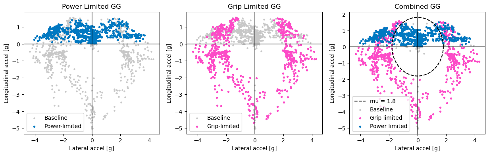
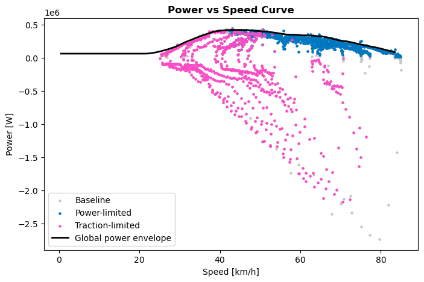

Multi-Channel Telemetry Ingestion
- Processed time-series channels across a 5,000m lap, synchronizing vehicle speed, $a_x$, $a_y$, throttle position, brake pressure, steering angle, and DRS actuation.
- Applied signal filtering to eliminate transient sensor noise and shifting artifacts prior to calculating dynamic force vectors.
# Calculate dynamic aerodynamic lift coefficient (CL)
mp['CL'] = (
((2 * carMass) / (rho * frontArea * mp['speed']**2)) *
((np.sqrt(mp['longAcc']**2 + mp['latAcc']**2) / mu) - g)
)
# Isolate true grip-limited peak downforce
maxCL = mp['CL'].max()
print(f"Maximum downforce coefficient: {maxCL:.2f}")Aerodynamic Limit Isolation
- Vectorized NumPy transformations evaluate dynamic pressure ($q = \frac{1}{2}\rho V^2$) and vehicle load balance at scale.
- Isolated maximum downforce values strictly within traction-bound corners and braking zones.

GG Friction Circle Expansion
- Mapped combined lateral and longitudinal g-forces against the static friction boundary ($\mu = 1.8$). High-speed braking zones reach up to ~4–5g, directly demonstrating aero downforce scaling.
- Separated telemetry points into distinct domains: Power-Limited (engine output bounds acceleration) and Grip-Limited (tire traction bounds performance).

Power vs. Speed Envelope & Spatial Tracking
- Evaluated engine saturation thresholds across vehicle velocity ranges to confirm straightaway power limits versus cornering grip limits.
- Reconstructed full spatial circuit geometry (using integrated telemetry velocity vectors) to compare dead-reckoned track trajectories against GPS coordinates.